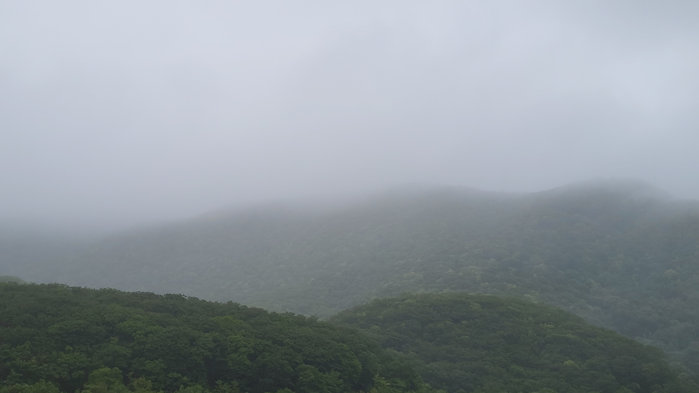

одинокий самиздат
отдельный угол интернета
для всего, что могло быть опубликовано на какой-нибудь блог-платформе, но ни одна не понравилась.

от редакции
Всё это могло быть опубликовано на какой-нибудь блог-платформе, но мне никакая не понравилась. Поэтому я сделала себе отдельный угол интернета.